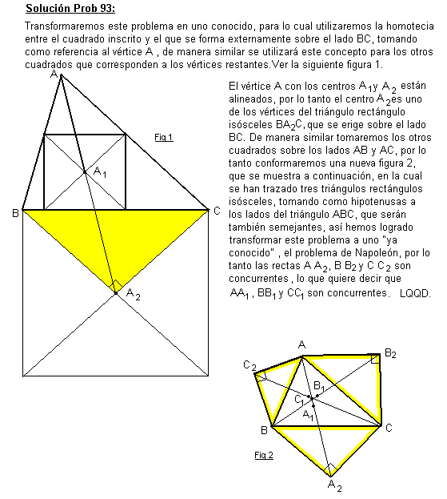

Dado un triángulo ABC, se inscribe en él un cuadrado uno de cuyos lados se apoye en el lado BC. Sea A1 el centro de este cuadrado.
De igual modo se construyen cuadrados con lados apoyados en AC y en AB y cuyos centros son los puntos B1 y C1 respectivamente.
Probar que las rectas AA1, BB1 y CC1 son concurrentes.
(Enunciado tomado del artículo Otros problemas de la I.M.O. de Washington, 2001
publicado en la Gaceta de la Real Sociedad Matemática Española, , pág. 708-709, septiembre – diciembre de 2002)
Solución de Juan Carlos Salazar, Profesor de Geometría del Equipo
Olímpico de Venezuela.(Puerto Ordaz)

Ver la generalización del teroema de Napoleón
Ver Generalización del punto de Fermat: Punto de Vecten (1)
Generalización del punto de Fermat: Punto de Vecten (2)
Por Juan Carlos Salazar, Profesor de Geometría del Equipo Olímpico de Venezuela.(Puerto Ordaz)